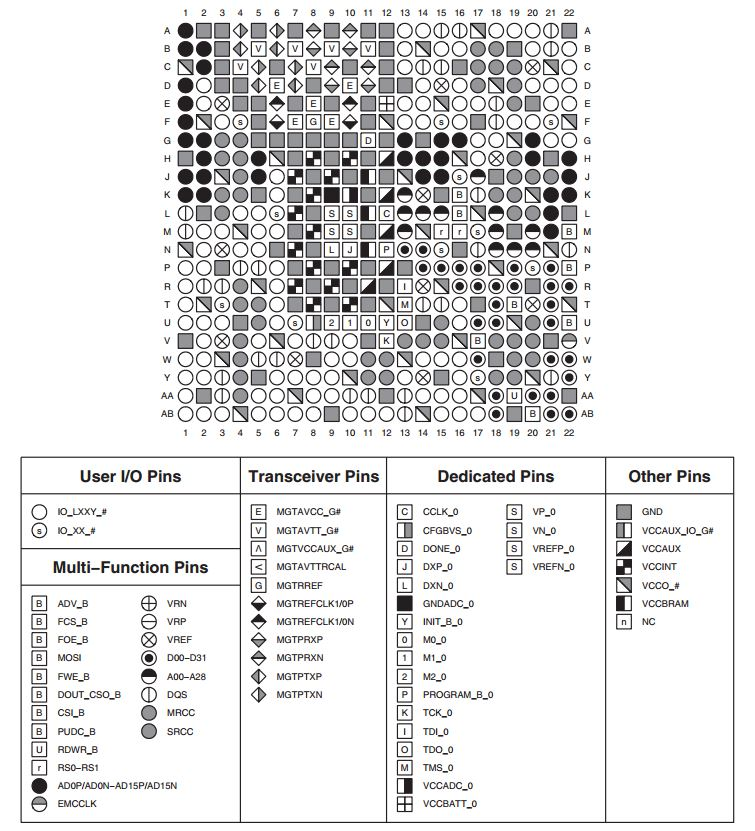
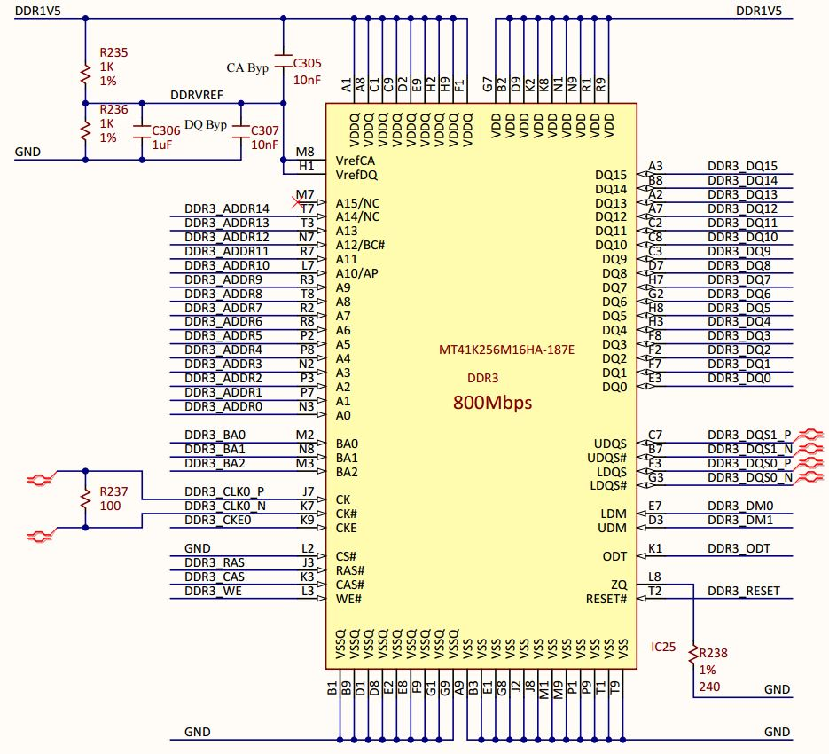
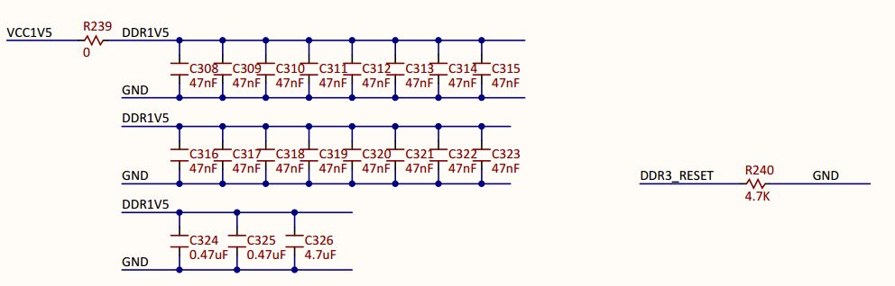
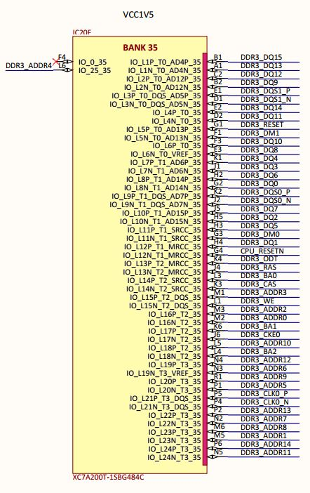
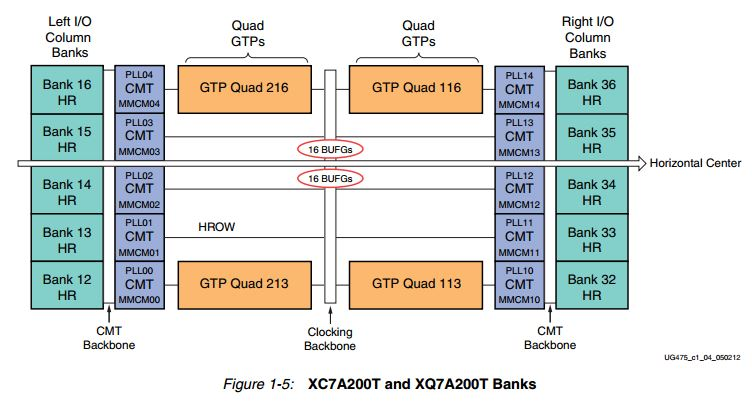
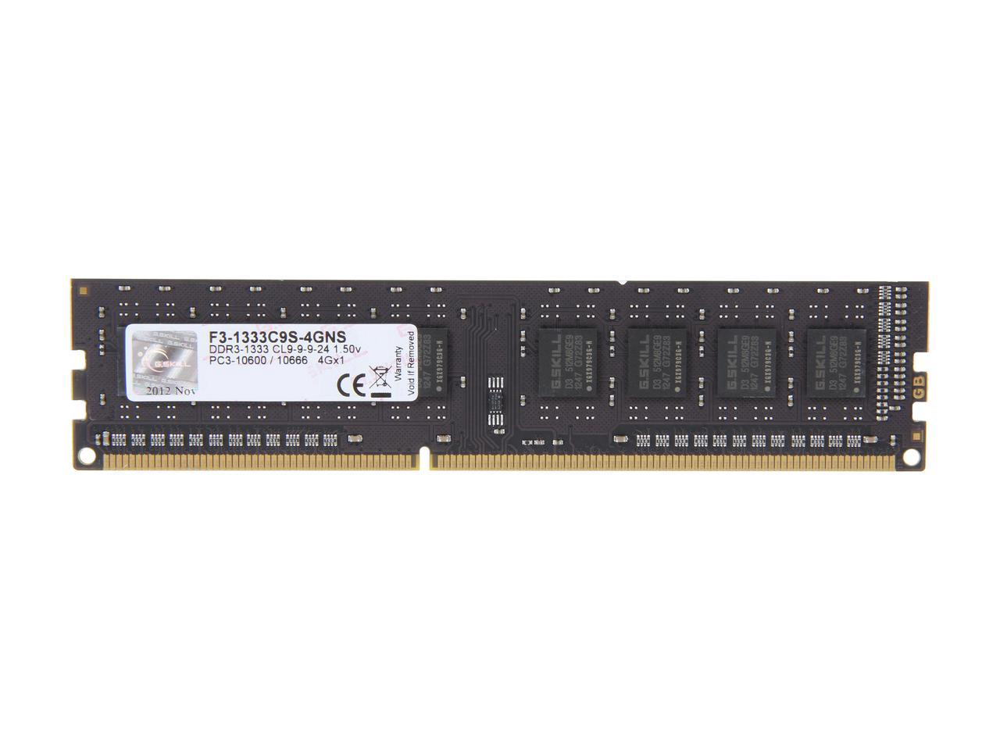

Labs
Memory Controller Lab
As is stated in the Digilent Nexys Video reference guide, the Nexys Video Board has a 512MB external DDR3 SDRAM module, which is physically located just above the Artix-7 FPGA on the Nexys Video board. In this lab, we will go through how to interface with this SDRAM to read and write data to different addresses in RAM, essentially creating a memory controller. In this lab, the Microblaze CPU will not be used. However, the Microblaze can be added in future labs.The next few sections are the result of digging through the datasheets on how exactly the SDRAM can interface with the Artix-7.
The SDRAM on the on the Nexys Video
The Nexys Video contains a single Micron MT41K256M16HA-187E DDR3 memory chip. The datasheet for the chip can be found here. Let's break down what the part number for this SDRAM IC means.The MT stands for Micron Technology, and MT41K is the part number. Next, the 256M16 means the configuration of the chip. In this case, the configuration is 256 Meg x 16. Other possibilities are 1G4 or 512M8. After the configuration of the chip is the package - HA in this case. HA means a 96-ball 9mm x 14mm FBGA package, shown in the figure below.

The FBGA package is also what is printed on the second line of the physical SDRAM chip - D9PXV on the Nexys Video board. The speed of the SDRAM is next, which is 187E in this case, which corresponds to a tck of 1.875ns and a CL = 7.
For a background on what FBGA (fine-pitch ball grid array) mounting is all about, click here.
Interface between the FPGA and the SDRAM
The Xilinx XC7A200T-1SBG484C (Artix-7) FPGA is contained in a SBG484 BGA package. This results in a 19mm x 19mm package with a ball pitch of 0.8mm and a maximum of 285 I/O's which function on 1.2-3.3V. The 484 (22x22) total pins on the Artix-7 can be seen in the figure below, and the types of pins are specified in the table below the pinout (I/O pins are shown as circles). A text file showing the configuration of all of the pins can be found here. Many of the pins in the picture above are used for configuration of the FPGA on power-up or for power/ground.
The schematics pf the MT41K SDRAM included in the Nexys Video schematic pdf on page 13 are shown below.

In the Figure above, all of the signals on the top of the SDRAM package are connected to 1.5V while all the signals on the bottom of the SDRAM package are connected to GND. These connections between 1.5V and GND are decoupled using the capacitors shown in the Figure below. 
The schematic of the SDRAM above has pins DQ0-DQ15, which are the data pins, and pins A0-A15 which are the address pins for the SDRAM. These pins as well as the others on the board are all connected to Bank 35 of the Artix-7, as shown in the Figure below.

Banks in all of the 7-series Xilinx FPGAs are important ways in which the Artix-7 handles its large amount of pins. According to Xilinx documentation, each bank has 50 I/O pins. Also, there are not actually 35 banks - there are 10, as shown in the Figure of all the XC7A200T banks below.

So now that we can trace the physical connections between the Artix-7 FPGA and the SDRAM, how does the SDRAM actually work and how do we give it data?
SDRAM in General
Before we get into the specifics of the MT41K SDRAM module, let's cover SDRAM in general. As anyone who has ever looked at a computer knows, a typical DDR3 memory module comes in a DIMM (Dual-Inline Memory Module) which looks like the Figure below, which is a 4GB 240-pin DDR3 SDRAM containing eight 512 MB SDRAM modules I found on NewEgg for a price of $25.99.
DIMM modules such as the one above easily fit into a modern motherboard and interface with the memory controller present on the motherboard. An assembler of a computer need not know how the memory actually works. An example of how the DDR3 DIMM module uses its 240 pins to connect to the eight individual SDRAM pins is shown in the datasheet here.